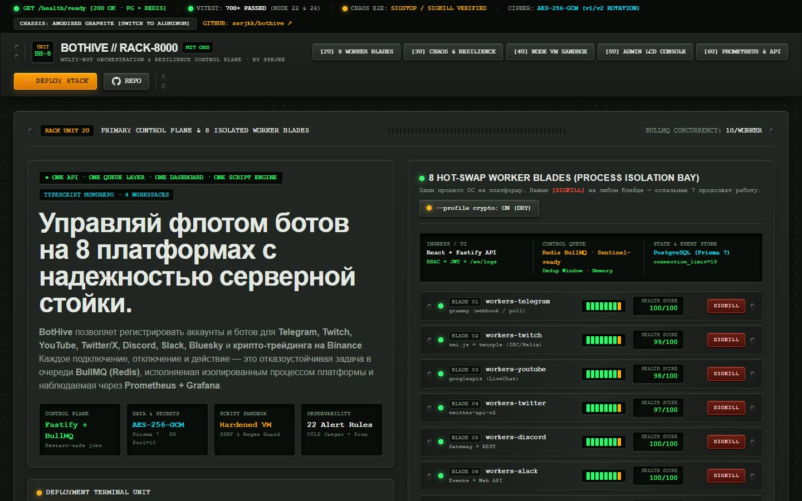
livebothive
botsПлатформа оркестрации ботов: 8 платформ, BullMQ, песочница скриптов, circuit breaker, DLQ и Prometheus.
Лендинг проекта API ADR Deploy Смотреть код Карточка в @ssrjkk_botFull-stack · Telegram · Web3
Сергей Ситников. Фулстек-разработка на Python и TypeScript: Telegram-боты, Mini Apps, интернет-магазины и backend. Ниже — живые проекты, а не концепты: ссылки открываются, код лежит на GitHub.
Каждый проект можно открыть и потрогать. Скриншоты сняты с живых интерфейсов; где публичного интерфейса нет — показан код проекта.

liveПлатформа оркестрации ботов: 8 платформ, BullMQ, песочница скриптов, circuit breaker, DLQ и Prometheus.
Лендинг проекта API ADR Deploy Смотреть код Карточка в @ssrjkk_bot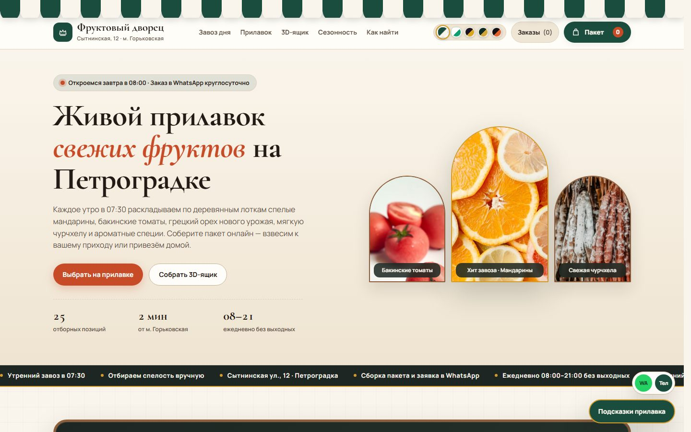
liveСайт магазина фруктов и овощей на Сытнинской ул., 12: 25 позиций в шести рядах с ценой за единицу, поиск, пакет с повтором заказа, конструктор 3D-ящика, сезонный календарь и подсказки прилавка. Оплату страница не принимает: заявка уходит продавцу в Telegram, оттуда приходит счёт СБП или на карту, либо расчёт при получении. Пять палитр на одной разметке, промокоды, QR на адрес витрины в блоке «Как найти», self-hosted ассеты, CSP и ноль трекеров; адрес, часы, оба телефона и плашка «4,7 · 39 оценок · 22 отзыва» взяты из карточки организации на Яндекс Картах, а сама карта грузится только по клику. Архив проекта выгружается прямо из браузера.
Открыть сайт Deploy Смотреть код Карточка в @ssrjkk_bot демо-витрина
демо-витрина
Лавка деликатесов на Сытном рынке: 12 отделов, 210 позиций — 183 с ценой и 27 уточняются, поиск, корзина с отменой действия, вес по факту резки. Публичная страница статичная и без внешних запросов; Next.js-движок с заказами, оплатой через Т-Банк и выгрузкой в 1С к боевым реквизитам не подключён, поэтому витрина в демо-режиме и закрыта от индексирования. 200 unit-тестов и 97 сценариев в браузере, четыре обязательные проверки CI, защищённый main.
Открыть сайт Releases Shop guide Смотреть код Карточка в @ssrjkk_bot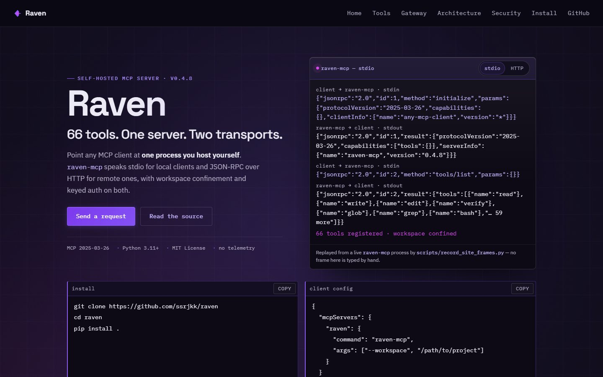
open sourceSelf-hosted MCP-сервер: 66 инструментов поверх stdio и HTTP, изоляция workspace и ключевая авторизация.
Открыть сайт Docs Security Changelog Смотреть код Карточка в @ssrjkk_bot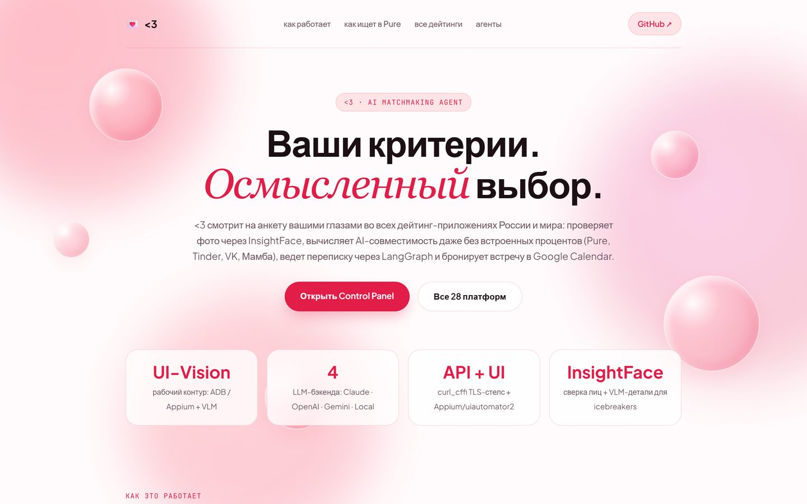
open sourceМультиплатформенный ассистент для дейтинга: VLM читает анкету и находит кнопки, свайпает на Android и в браузере, переписку ведёт трёхузловой LangGraph-агент. Режим, драйвер, платформа из реестра 28 дейтингов и ИИ-ключ любой формы меняются на ходу в панели. 112 тестов, 46 из них — на чистой stdlib.
Лендинг проекта Security Смотреть код Integration guide Карточка в @ssrjkk_bot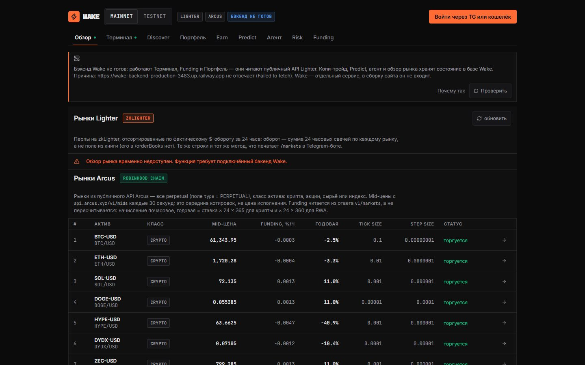
live botТерминал по перп-рынкам Lighter + Telegram-бот с теми же рыночными данными: объёмы, funding, портфель.
Открыть бота Открыть сайт Whitepaper Changelog Deploy Смотреть код Карточка в @ssrjkk_bot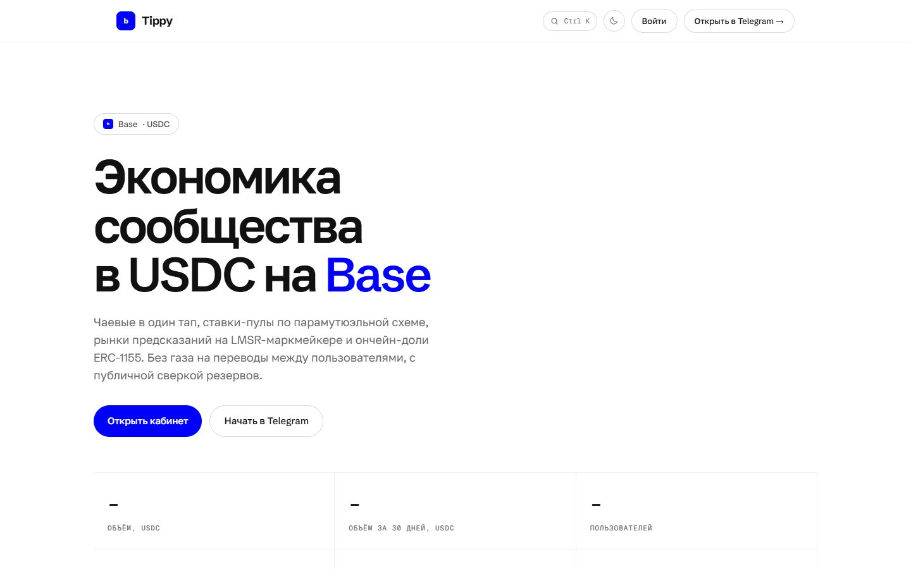
live botUSDC-экономика в Telegram: чаевые, донат-страницы, рынки предсказаний на LMSR и кабинет в Mini App.
Открыть бота Открыть сайт Whitepaper User guide Security Смотреть код Карточка в @ssrjkk_bot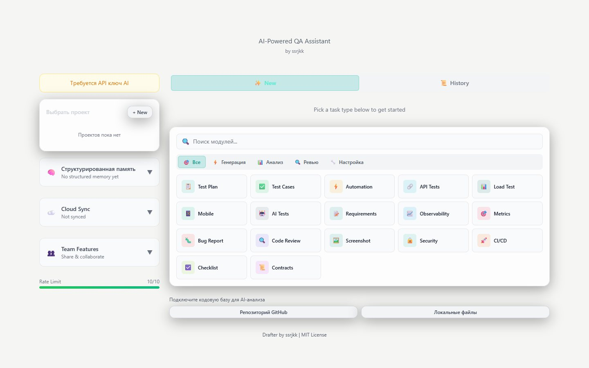
liveБраузерный QA-ассистент: тест-планы, кейсы, код автотестов и баг-репорты из описания задачи. Девять провайдеров, свой ключ.
Открыть сайт Changelog Security Смотреть код Карточка в @ssrjkk_bot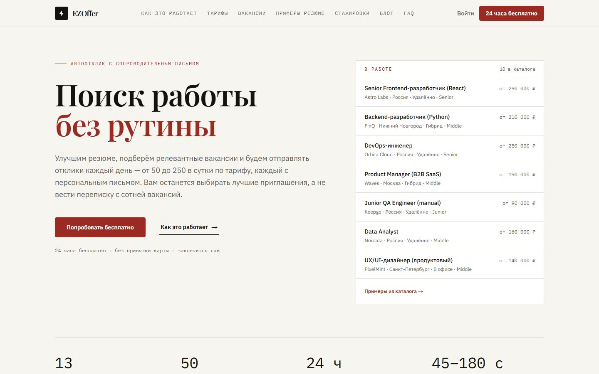
liveАвтоклик по hh.ru: резюме, подбор вакансий из 13 источников и до 250 откликов в сутки на старшем тарифе, каждый с письмом.
Открыть сайт Открыть бота FAQ Pricing About Смотреть код Карточка в @ssrjkk_bot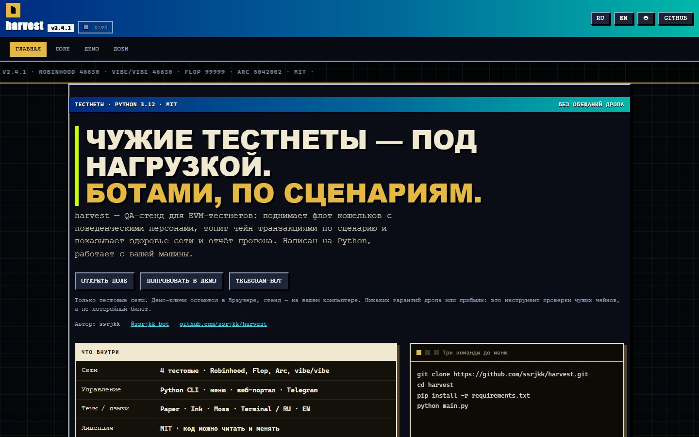
liveQA-стенд для чужих EVM-тестнетов: флот кошельков, сценарии, здоровье сети и отчёт. Только тестовые сети, плюс Telegram-бот.
Открыть сайт Открыть бота Docs Demo Changelog Смотреть код Карточка в @ssrjkk_bot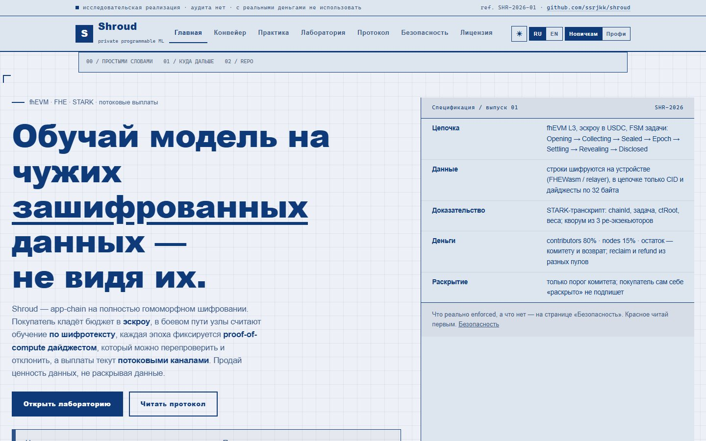
researchИсследовательский прототип: обучение ML на шифрованных данных, escrow-задачи и STARK-прототип проверки вычислений. Не аудировано.
Открыть сайт Protocol Security User guide Смотреть код Карточка в @ssrjkk_bot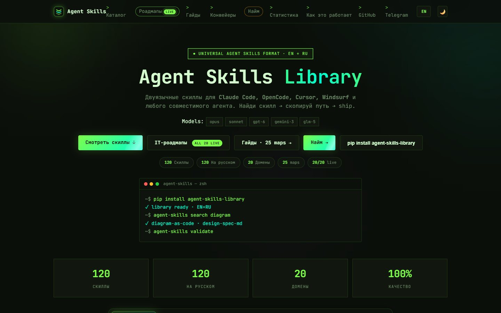
live120 навыков на EN и RU, 20 IT-роадмапов и 25 гайдов. Публичный registry, поиск через CLI --remote и Python SDK.
Открыть каталог Registry JSON Roadmaps Guides Architecture Смотреть код Карточка в @ssrjkk_bot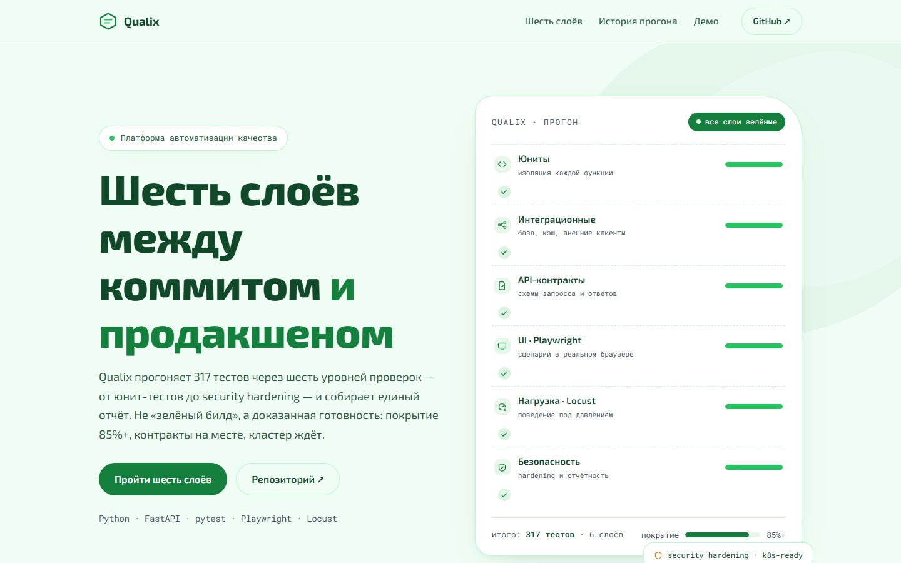
liveПлатформа автоматизации тестирования: шесть уровней — от unit до нагрузки. Покрытие и результаты считает CI, а не обещания. Готова к k8s.
Открыть сайт ADR Changelog Смотреть код Карточка в @ssrjkk_bot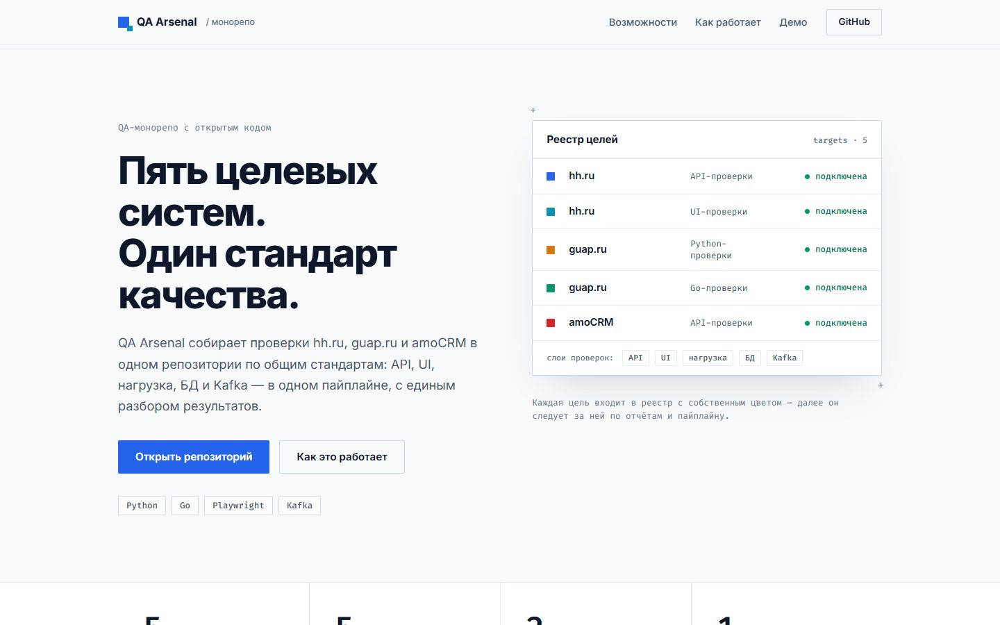
liveМонорепозиторий автотестов: API и UI на hh.ru, Python- и Go-тесты ГУАП, amoCRM — нагрузка, БД и Kafka в одном пайплайне.
Открыть сайт Смотреть код Карточка в @ssrjkk_bot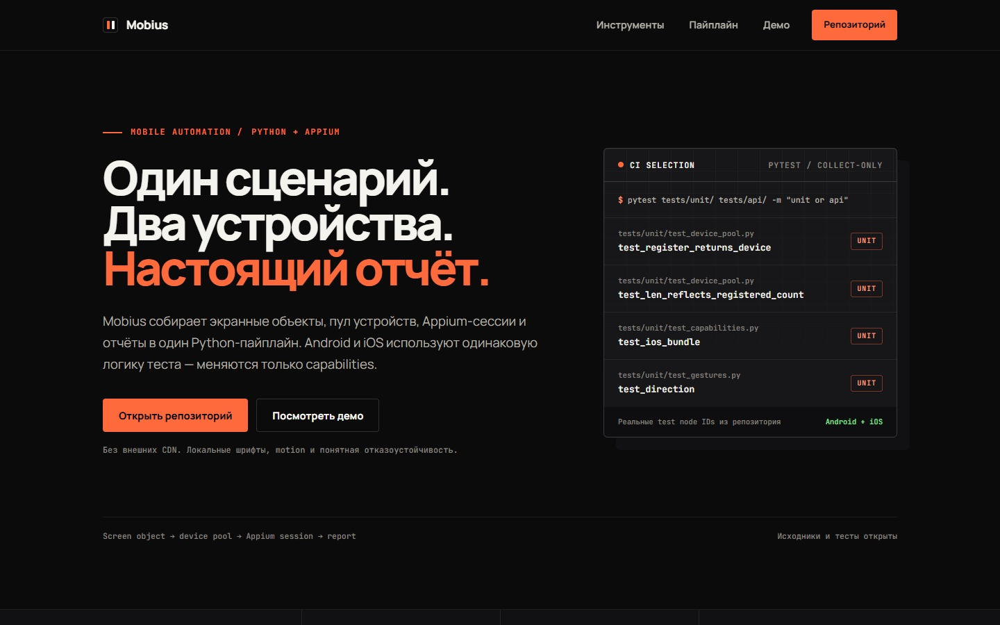
liveАвтоматизация мобильных приложений на Android и iOS: Appium 2.x, screen objects, пул устройств, параллельные прогоны — 951 тест и 99% покрытия кода.
Открыть сайт Usage Changelog Смотреть код Карточка в @ssrjkk_bot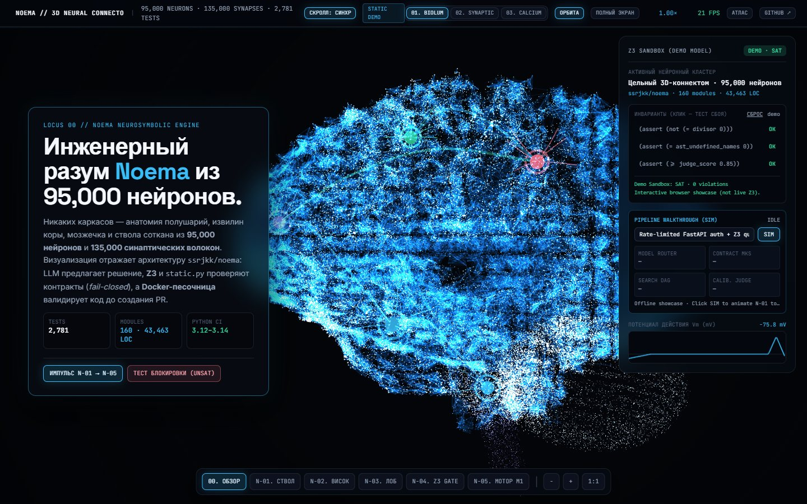
liveНейросимвольный движок: LLM предлагает решение, Z3 доказывает его по формальным контрактам, кандидат исполняется в изолированной песочнице, инциденты становятся проверенными pull request.
Открыть сайт Atlas Смотреть код Usage guide Whitepaper Карточка в @ssrjkk_bot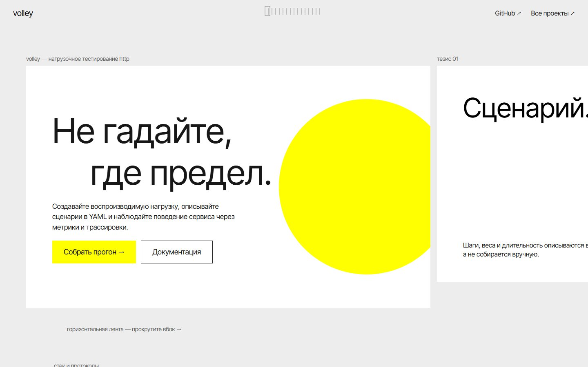
liveНагрузочное тестирование HTTP на асинхронном ядре C++20: YAML-сценарии, OAuth2, mTLS и Vault, экспорт в OTLP и Prometheus, Python SDK.
Открыть сайт Showcase Architecture Смотреть код Карточка в @ssrjkk_bot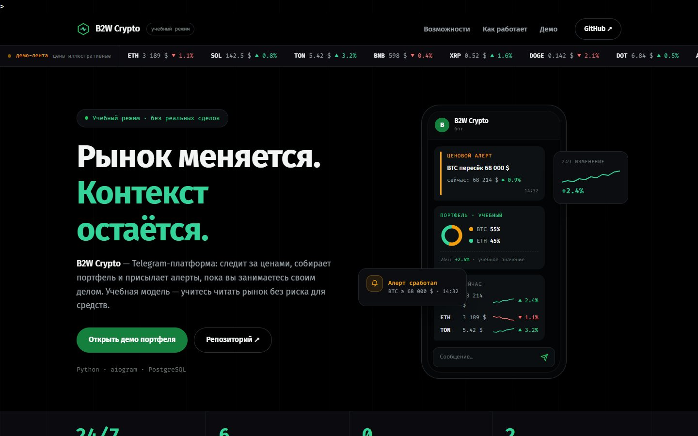
liveTelegram-платформа криптопортфеля: отслеживание цен, мониторинг рынка, алерты и портфельные отчёты.
Открыть сайт API Deploy Смотреть код Карточка в @ssrjkk_bot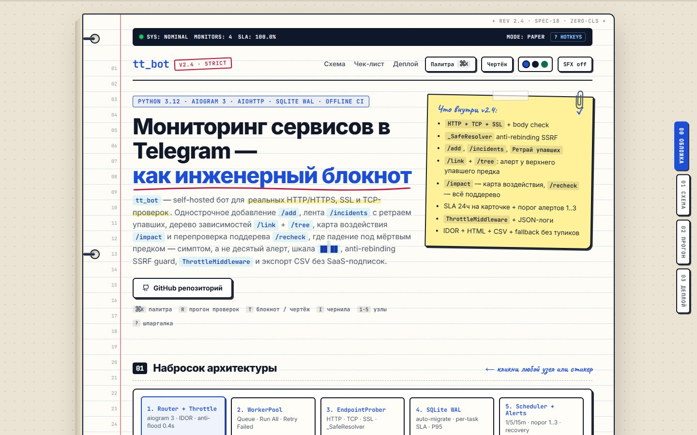
liveЧат-ops прямо из Telegram: мониторинг HTTP/HTTPS, SSL-сертификатов и TCP-сервисов за anti-rebinding SSRF guard, дерево зависимостей /link и /tree с подавлением симптомных алертов, границы доступа по user_id, SLA с P50/P95, история в SQLite WAL и CSV с санитайзером формул.
Открыть сайт Architecture Смотреть код Карточка в @ssrjkk_bot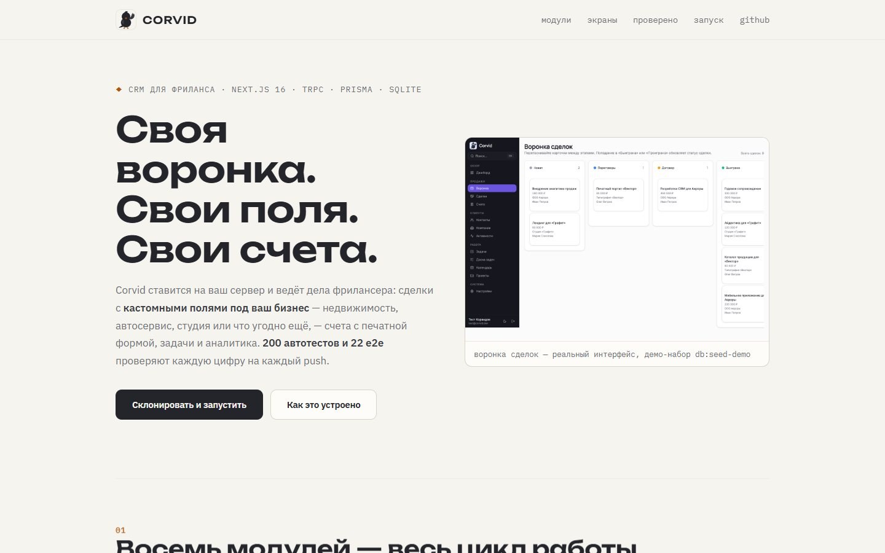
liveCRM для фриланса: сделки, счета, клиенты, задачи и аналитика в одном интерфейсе — своя воронка, свои поля и свои счета.
Открыть сайт Смотреть код Карточка в @ssrjkk_bot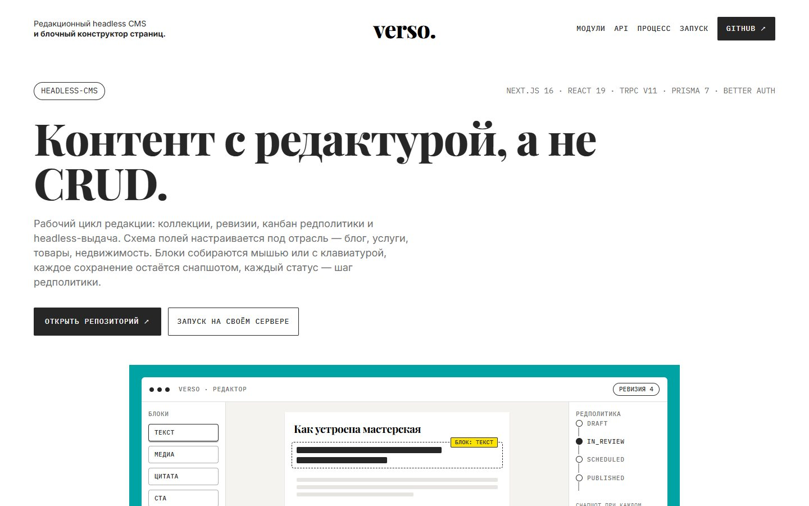
liveРедакционная headless CMS и блочный конструктор страниц: коллекции, записи, ревизии, канбан редполитики и headless-выдача по API.
Открыть сайт Decisions Deploy Смотреть код Карточка в @ssrjkk_bot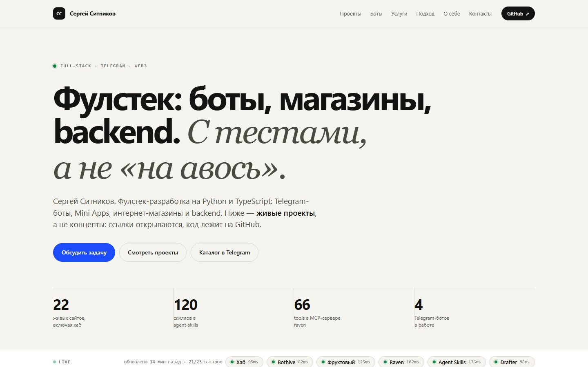
liveХаб проектов и услуг: живые интерфейсы, ссылки на сайты и ботов, контакты. Здесь же живёт каталог-бот @ssrjkk_bot на Cloudflare Workers.
Открыть хаб Открыть бота Смотреть код Карточка в @ssrjkk_botНейросимвольный движок: LLM предлагает, Z3 доказывает по контрактам, CEGIS возвращает контрпримеры. Витрина — 3D-коннектом из 95 000 нейронов, v2 уже в main.
Анатомия движка по отделам мозга: где рождается решение, живёт память, оттачиваются навыки и стоят защитные оболочки. Бумажная вёрстка, что раньше была главным лендингом.
Нагрузка на HTTP: C++20 async-ядро, YAML-сценарии, OAuth2/mTLS, OpenTelemetry.
Мобильная автоматизация Android/iOS: Appium 2.x + pytest, screen objects, device pooling.
QA-монорепо: API/UI/load/DB/Kafka на 5 целей, один пайплайн и стандарты.
CRM для фриланса: сделки, счета, клиенты, задачи и аналитика в одном окне.
Редакционный Headless CMS: коллекции, ревизии, канбан редполитики и headless-выдача.
Каталог проектов @ssrjkk_bot: Cloudflare Worker, D1 и KV, двуязычный каталог и скриншоты. Живёт в этом репозитории, в bot/.
Telegram-платформа для криптопортфеля: отслеживание цен, алерты, рыночная аналитика.
Чат-ops прямо из Telegram: HTTP/HTTPS, SSL и TCP за anti-rebinding SSRF guard, дерево /link и /tree, SLA/P95 и CSV-отчёт.
Пять ботов в работе: каталог проектов, торговый терминал, платежи, тестнет-стенд и отклики на hh.ru.
Каталог проектов: /projects, /sites, /bots, /top, /search, скриншоты и переключение RU/EN. Cloudflare Workers, D1 и KV.
Карточки рынков, funding и ссылка на терминал Wake — те же данные Lighter, что и на сайте.
Чаевые, донат-страницы, рынки предсказаний и Mini App в USDC на Base.
Статус тестнет-стенда и операторские команды Harvest.
Автоотклики на hh.ru: подбор вакансий, сопроводительные письма и уведомления об ответах прямо в Telegram.
Ориентиры по цене и сроку. Точная смета — после короткого описания задачи, без «уточним в процессе».
Заявки, оплаты, админка, рассылки, уведомления. Интеграция с CRM, Google Sheets или вашей базой.
Каталог, фильтры, корзина, оформление заказа и Deep Link в бота: витрина и заявки в одном контуре.
Кабинет, каталог, оплата внутри Telegram, админка. React + API, без конструкторов и потолка в кастомизации.
Новые фичи и интеграции в существующий продукт: React, API, база, тесты и CI. Разовый спринт или поддержка на ретейнере.
Предоплата 50%. Работаю по ТЗ, правки в рамках согласованного объёма — без доплат. Деплой и инструкция входят в стоимость.
Один исполнитель, без менеджеров и передач между отделами. Вы всегда знаете, на каком этапе задача.
30 минут в Telegram: что нужно, что уже есть, где узкое место. Фиксирую объём и цену.
Сценарии, экраны, схема данных. Согласуем до кода, чтобы не переделывать после сдачи.
Короткие статусы раз в 1–2 дня. Показываю рабочие куски, а не отчёт «всё идёт по плану».
Проверяю сценарии, деплою в Docker, отдаю исходники, логи и инструкцию по запуску.
Собираю продукт целиком: интерфейс, API, база, интеграции и деплой. В проектах ниже — магазин с ботами TG/MAX, платформа оркестрации на 8 платформ, MCP-сервер на 66 инструментов и торговый терминал. Поэтому в коде сразу закладываю тесты, логи и обработку ошибок.
Пишу на Python и TypeScript: FastAPI, aiogram, React, PostgreSQL, Redis, Docker. Деплой — не «залил по SSH», а compose/CI с логами и health-check. Если проект не тянет — скажу до заказа, а не после.
Работаю сам. Без прослойки, которая пересказывает ТЗ. Отвечаю в течение дня, по МСК.
Не беру задачи, где нет доступа к стенду и непонятен критерий «готово». Так дешевле для обеих сторон.
Пришлите 2–3 строки: что нужно сделать и какой результат считается готовым. Отвечу с оценкой и планом, даже если решите не брать.